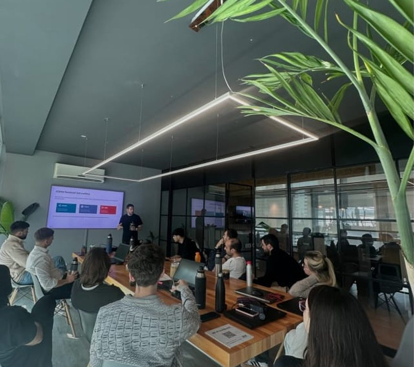
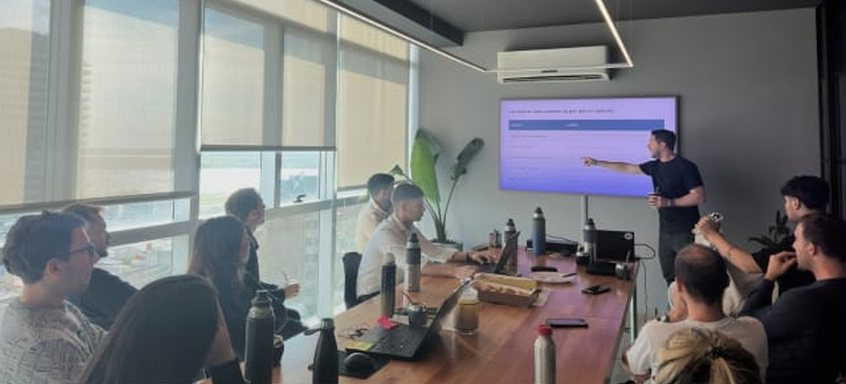
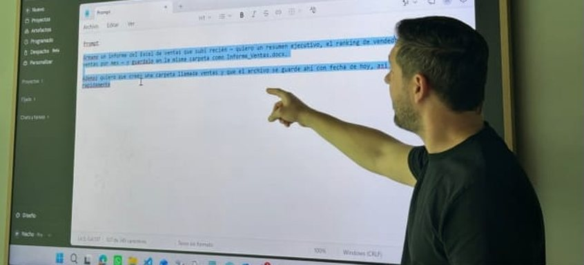

La inteligencia artificial para tu empresa, en criollo y sin humo.
Te ayudo a entender qué puede hacer hoy la IA por tu pyme y por dónde empezar. Sin tecnicismos ni promesas mágicas.
La mayoría de las pymes no necesita más tecnología. Necesita entenderla y saber por dónde arrancar.
Demasiada promesa y tecnicismo, poca traducción a lo que le sirve a una empresa que factura, contrata y quiere crecer.
Qué puede hacer la IA por vos hoy, y qué no.
Salís sabiendo por dónde arrancar.
Una milla es un tramo del camino. Te acompaño en el primero, el más difícil.
Para que la IA deje de ser una amenaza abstracta y empiece a ahorrarte tiempo y plata.
El camino tiene etapas. Las recorremos a tu ritmo, una milla a la vez.
Sacamos el humo del medio
Charlas para que vos y tu equipo entiendan qué es la IA, cómo funciona y qué es puro marketing. Sin siglas.
La IA baja a tu día a día
La usamos en herramientas que ya conocés, como Excel o Claude, sobre procesos reales de tu empresa. Nada de casos genéricos.
Aprendés a manejarla vos
Cómo pedirle bien las cosas, qué cuesta cada herramienta, cuál conviene según el caso y cómo saber si te sirve para una tarea puntual.
es lo que una empresa recuperó en un año automatizando tareas administrativas.
Unas 900 horas, según un relevamiento real, proceso por proceso. Caso de una desarrolladora inmobiliaria de Rosario.
Hablo los dos idiomas: el del negocio y el de la tecnología.
Pasé quince años en el periodismo aprendiendo a hacer entendible lo complejo. Después me pasé al mundo de los sistemas y hoy lidero el área de tecnología de una empresa, donde construí desde cero el ecosistema que automatiza buena parte de su operación.
Esa mezcla es rara y es justamente lo que traigo: sé traducir lo técnico al idioma de quien toma las decisiones. No te voy a llenar de humo ni de palabras difíciles. Te voy a mostrar, con ejemplos y números, qué te conviene hacer.
Los que ya arrancaron...


